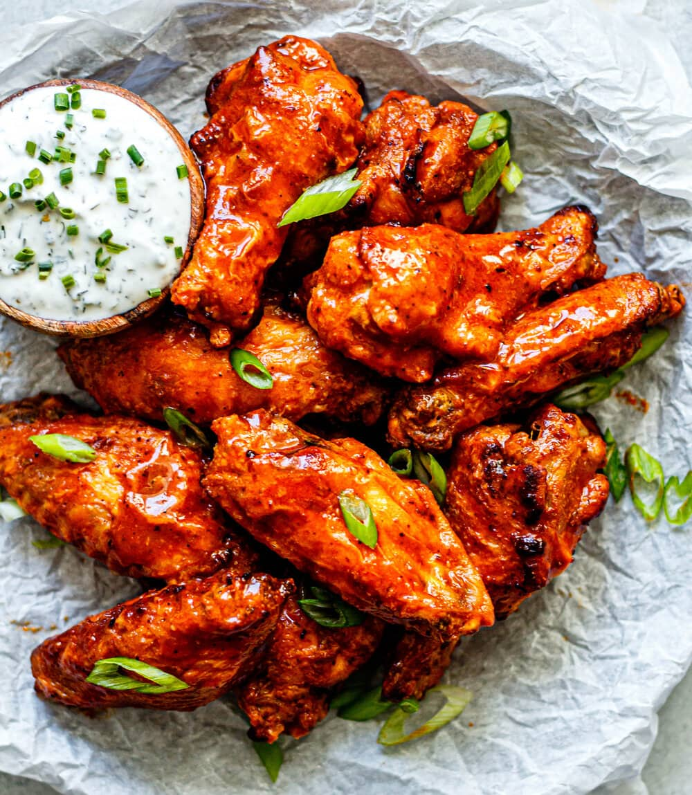

Crispy Buffalo Wings Recipe

Let's get started on your wings!
This is a common yet effective recipe, crafted by spicy wing lovers with years of experience behind the bone.
By closely following this recipe, you can ensure that your wings will no longer lack the essential crispiness and flavor we all desire.
Ingredients
- 1lb chicken wings
- 2 cups all-purpose flour
- 1/2tbs corn starch
- Salt to taste
- 1/2tbs black pepper
- 2 eggs beaten
- Your favorite buffalo sauce
Steps
- Pat the wings dry. Prepare flour and seasonings mixture. Beat eggs for egg wash.
- Once dry, coat wings in flour, then dip in egg wash, then return to flour, coating the wing completely.
- Repeat this process until all wings are properly coated.
- Heat 1/2inch thick of Vegetable Oil. Individually place wings in hot oil, for about 7 minutes, flipping halfway through.
- Allow wings to dry briefly, then place in a large bowl. Pour your buffalo sauce into bowl with wings and toss, evenly saucing wings. Enjoy!